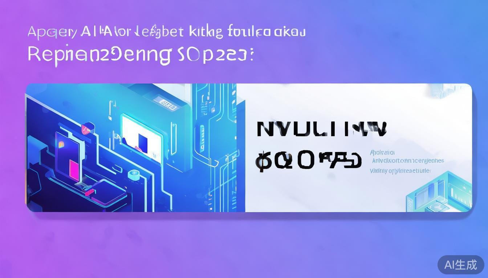

2026年中AI学习路径实测：别再啃3年前的旧教程了，这是我验证过的无水分入门到落地路线
今天是2026年8月22日，距离GPT-4发布已经过去3年零5个月，我后台收到的AI学习相关提问里，80%的人踩的坑还是一模一样：照着2023年的路线图啃了半年Transformer源码，结果现在端侧小模型都能跑在手表上，企业招AI应用岗根本不考你手写注意力机制；花几千块报了所谓的“全栈AI工程师”班，学的还是2024年就被淘汰的LangChain 0.1版本接口，连MCP协议、Agent编排新标准是什么都不知道。这篇路径我拉了3个在互联网大厂做AI应用落地、2个在创业公司做垂直模型微调的朋友一起核对过，所有内容都是当前招聘JD里明确要求、落地项目里真的能用的，没有半句正确的废话。
第一阶段：0基础入门，别上来就啃数学，先建立“AI可用性体感”（2周足够）
很多人学AI的第一步就错了：找了一堆高数、线性代数、概率论的网课，说要打基础，结果看了3天极限就放弃了。2026年的今天，你根本不需要先会推反向传播才能用AI解决问题，第一阶段的核心目标只有一个：搞清楚现在的AI到底能做什么、不能做什么，建立准确的能力边界体感，避免要么把AI当神、要么觉得AI都是骗人的两个极端。
这一阶段你不需要写一行代码，要做的事非常具体：
- 把当前主流模型的免费额度全部用满：至少深度使用GPT-5o mini、Claude 3.7 Sonnet、豆包4.5 Ultra、DeepSeek V3这四个模型，每个模型累计对话量不低于200轮，覆盖文案生成、代码编写、逻辑推理、多模态理解四个场景，自己总结出每个模型擅长的领域——比如Claude处理长文档的容错率更高，DeepSeek写复杂SQL的准确率更高，别再人云亦云说“某某模型最强”。
- 动手跑通3个不需要本地部署的官方Demo：OpenAI的实时语音对话、Sora 2的60秒文生视频、Gemini的端侧摄像头实时识别，不用研究原理，就是亲手用，知道现在的SOTA能力到了哪一步，哪些网上传的“AI神操作”是真的，哪些是剪辑出来的。
- 刻意测试3类AI的典型失效场景：让AI算3步以上的小学数学应用题、让AI引用2026年最新的行业公开数据、让AI处理带嵌套逻辑的合同条款审核，把AI出错的场景记下来，这比你看10篇AI科普文有用得多。
这一阶段达标标准非常简单：你给身边完全不懂AI的朋友讲清楚，现在的大模型本质是“下一个词预测的概率模型”，能准确说出3个AI能稳定做好的事、3个AI100%会出错的事，就算过，不用在这一步耗超过2周。
第二阶段：应用层落地，这是现在80%的人找AI相关工作的核心能力（4-6周）

如果你不是要去大模型公司做预训练算法岗，根本不需要往下学什么Transformer源码、分布式训练，现在市场上60%的AI相关岗位（AI产品经理、AI应用开发、AI解决方案、企业AI落地顾问），考察的都是这一阶段的能力：能不能用现成的模型和工具，搭出来能解决实际问题的可用应用。
这一阶段的学习不要看零散的短视频教程，直接按照官方文档按顺序学，所有内容都是免费的：
- 先学API调用基础：不用学复杂的Python框架，先拿官方提供的Node.js或者Python SDK，跑通单轮对话、多轮对话、流式输出、Function Call这四个基础功能，累计写代码量不超过1000行，重点搞清楚System Prompt、温度系数、上下文窗口这三个核心参数对输出结果的影响，能独立写出稳定不跑偏的结构化输出Prompt。
- 再学当前主流的Agent开发标准：别再学2024年那套LangChain老接口了，现在行业通用的是MCP模型上下文协议、A2A智能体互联标准，直接照着Anthropic官方的MCP教程、Google的A2A示例跑通2个Demo：一个是能读取本地文件、对接企业微信API的个人工作助理，一个是能调用搜索引擎、计算器、数据库工具的行业问答助手，搞清楚工具调用的权限边界、错误重试、上下文裁剪这三个落地必踩的坑。
- 最后补最容易被忽略的RAG实战：别上来就搞什么多模态RAG、GraphRAG花活，先把最基础的切片策略、向量库选型、召回重排流程跑通，用你自己工作领域的100份文档（比如你做电商就用商品详情和客服话术，你做教育就用课件和题库）搭一个专属知识库问答系统，测试回答准确率到85%以上就算达标——这一个项目写在简历上，比你考10个AI证书都有用。
这里要特别提醒：这一阶段不要沉迷于收集工具，什么AI工作流平台、低代码Agent工具，你只要会用开源的Dify或者Coze搭出来1个完整的、真的能帮你自己省时间的工作流（比如自动整理会议纪要、自动回复客户咨询、自动生成周报），比你试100个新工具有用。
第三阶段：进阶提升，按需选择方向，不要盲目学大模型训练（8-12周）
当你能独立搭出来可用的AI应用之后，再根据你的职业方向选进阶内容，这一步千万不要跟风，很多人本来想做应用开发，结果跟着博主学了半天LoRA微调、分布式训练，找工作的时候根本用不上，白白浪费时间。
如果你想做AI应用开发/解决方案岗
你不需要学预训练，重点学三个内容：一是端侧模型部署，现在2026年端侧7B模型的推理速度已经到了每秒80token，能跑在绝大多数手机和边缘设备上，学会用llama.cpp、MLX框架把Qwen 3、Llama 4的端侧版本量化部署到本地，搞清楚本地推理和云端调用的成本、延迟、隐私差异；二是AI应用的评估体系，怎么量化一个AI应用的回答准确率、召回率、用户满意度，怎么搭建Bad Case闭环优化流程，这是现在企业招资深AI开发最看重的能力，毕竟能搭Demo的人一抓一大把，能把Demo变成稳定上线产品的人不到10%；三是合规要求，搞清楚《生成式人工智能服务管理暂行办法》里对数据留存、内容审核、用户隐私的要求，别做出来的应用上线就被下架。
如果你想做垂直领域模型微调/算法岗
你也不用一开始就啃几万张卡的预训练，现在大模型的基础能力已经溢出了，绝大多数垂直场景根本不需要从头预训练，重点学三个内容：一是数据处理能力，90%的微调效果差都是因为数据质量差，学会怎么清洗领域数据、怎么构造高质量的SFT数据集、怎么做数据配比，比你会调多少训练参数有用；二是轻量化微调方法，现在LoRA、QLoRA已经是标配，重点学最新的ORPO、DPO对齐方法，能在单张4090显卡上微调7B/14B的垂直领域模型，效果能追平通用大模型在垂直场景的表现就算达标；三是推理优化，学会用vLLM、TensorRT-LLM做推理加速，把模型的推理成本打下来，毕竟企业用模型最核心的考量就是成本。
如果你是非技术岗（产品/运营/市场）
你根本不需要学写代码、学微调，重点练两个能力：一是AI场景拆解能力，能把你手里的工作拆解成AI能处理的子任务，知道哪些环节交给AI做效率最高，哪些环节必须人工审核；二是AI项目的ROI核算能力，算清楚一个AI项目落地要花多少钱、能省多少人力、多久能回本，这是现在企业里非技术岗做AI相关工作最核心的竞争力，别天天喊着“All in AI”，结果连个投入产出账都算不明白。
最后是今天就能开始的3个行动建议，别收藏了就等于学了
我见过太多人学AI的状态是：收藏了几十G的教程，加了十几个AI交流群，每天刷AI相关的新闻，结果半年过去了连个API都没调用过，本质就是把“看信息”当成了“学习”。今天看完这篇文章，你不用做什么宏大的学习计划，先做3件小事：
- 今天下班之前，花1个小时，把你现在每天重复做的、耗时超过30分钟的工作列出来，挑其中最机械的一件（比如整理数据、写邮件初版、做会议纪要），用你手里现成的AI工具把它自动化，不管用提示词还是用低代码工作流，今天就要跑通，第一次做肯定效果不好，没关系，调3次，只要能帮你省10分钟，就是落地的第一步。
- 把你网盘里存的所有2025年之前的AI教程全部删掉，尤其是那些标题叫“从0到1精通Transformer”“30天成为AI算法工程师”的旧教程，里面至少一半的内容现在已经被行业淘汰了，学了反而会误导你，要学就看官方最新的文档，比任何第三方教程都准确。
- 别去追什么“AI最新风口”，今天出来个AI Agent、明天出来个AI世界模型、后天出来个具身智能，这些和90%的普通人都没关系，你只要把你自己所在行业的AI落地场景摸透，能用上AI把你自己的工作效率提30%，你就已经超过了90%的同龄人。
最后说一句：2026年的AI早就不是什么高大上的黑科技了，它和20年前的互联网、10年前的移动互联网一样，就是一个通用工具，你不需要成为AI专家，你只需要成为会用AI的行业专家，就足够吃到这波技术红利了。
出处声明：本页内容为白驹全局大脑原创，或已标注引用来源；改编内容遵循原始项目许可证（如 MIT / CC），不侵犯原作者权益。若引用内容涉及版权问题，请联系我们更正。